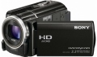

器材库 > 高清摄像机 > HDR-XR160E

规格总览
产品类型
硬盘式
发布日期
2011-02-24
HD
1080p
视频信号
PAL
影像传感器
影像传感器
Exmor R CMOS
影像传感器数量
1
影像传感器尺寸
1/1.4英寸
总像素
420万
有效像素（静态模式）
330万
镜头和对焦
镜头
G镜头
光圈
f/1.8-f/3.4
焦距
2.1- 63mm
等效35mm焦距
动态模式：(16:9):29.8 - 894mm ,(4:3):36.5 - 1095mm；静态模式：(16:9):32.5 - 975mm,(4:3):29.8 - 894mm
光学变焦
30倍
数码变焦
350倍
滤镜口径
37mm
镜头盖
是（自动）
拍摄性能
录制格式-视频
AVCHD
录制格式-静态图像
JPEG
视频尺寸
1920×1080
视频记录速率
50i, 25p, 50p
录制时间
5.1声道：28M(PS)：790分，24M(FX)：930分，17M(FH)：1270分，9M(HQ)：2240分，5M(LP)：3870分，STD HQ：2320分/2声道：28M(PS)：800分，24M(FX)：940分，17M(FH)：1290分，9M(HQ)：2290分，5M(LP)：4000分，STD HQ：2390分
静态图像尺寸
(4:3)2122×1584；(16:9)2122×1188；(4:3)1600×1200；VGA：640×480
最低照度
3lux
夜摄功能
无
内置麦克风
是
内置喇叭
是
快门速度
1/6 - 1/6000 秒
防抖系统
光学防抖（增强模式）
液晶屏/取景器
取景器
否
LCD尺寸
3.0英寸
LCD像素
23万
LCD特性
触摸屏
存储规格
内置存储容量
160GB
存储卡
MS/MS PRO记忆棒, SD/SDHC
闪光灯
内置闪光灯
是
输入输出
数据接口
USB
视频/音频接口
HDMI Mini 输出
配件端口
耳机
电源
电源（电池/电源适配器）
8.4V/ 7.2V
耗电量
1.9W
机身规格
颜色
黑色
尺寸
59.5×66×128mm
重量
350g
该产品暂无存档的网友点评
产品图 / 样片
索尼 HDR-XR160E